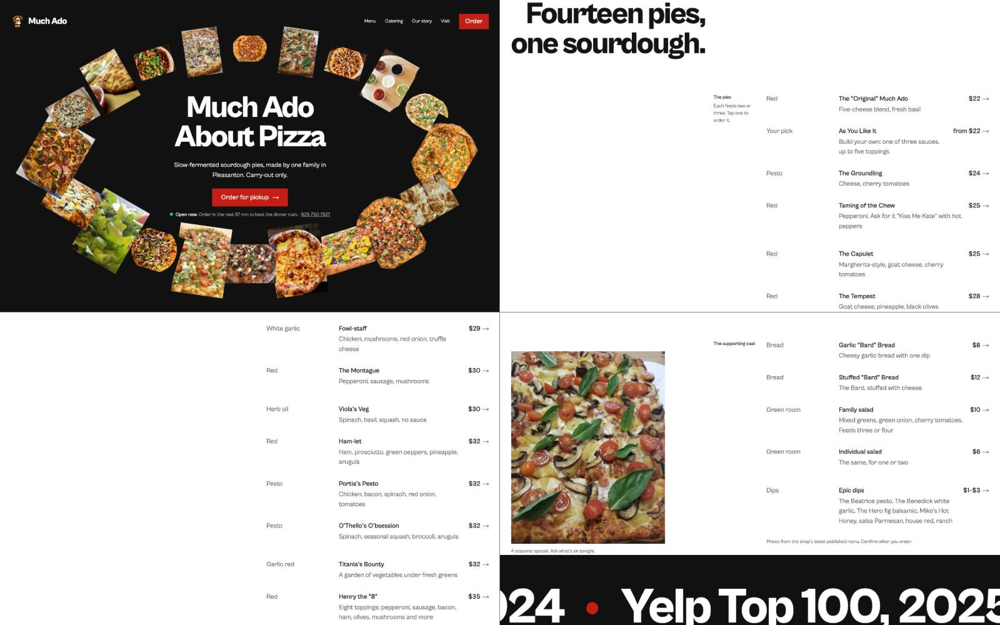
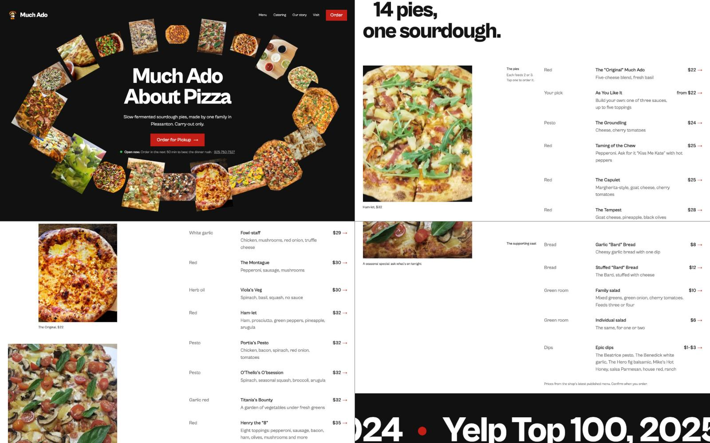
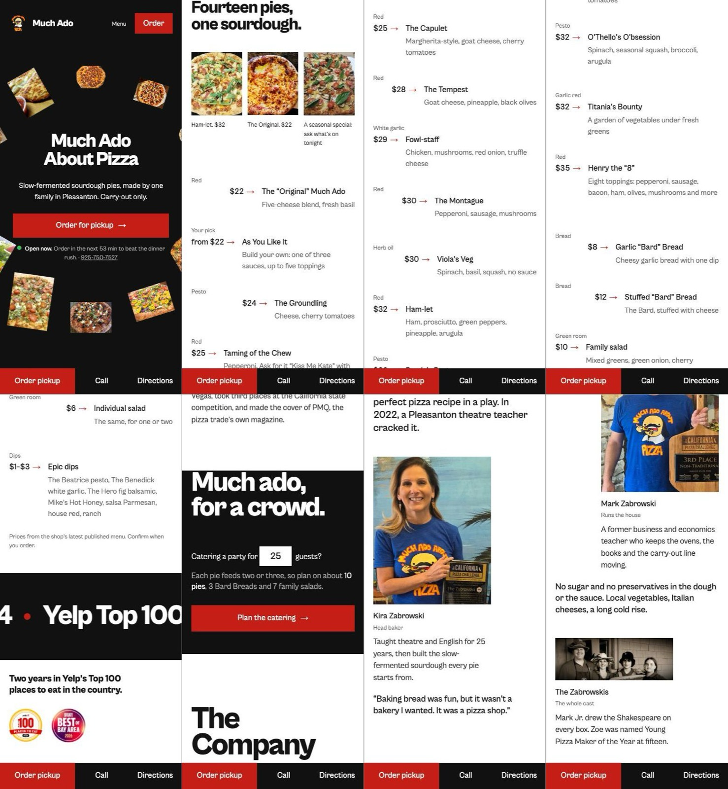
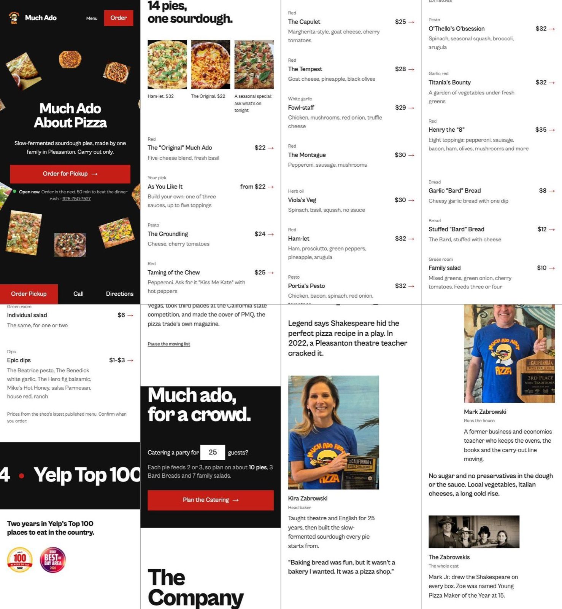

The look was dealt, not guessed
/design-taste-frontend ran its draw.mjs script on the brief and dealt three researched directions from a study of 247 award-winning sites. The one picked had to carry something only this shop has.
One shape from the subject runs the whole system: buttons, image masks, a loader.
Passed over: a pie is round for every pizzeria, so it fails the competitor test.
The name is the headline, set so large it becomes architecture.
Chosen: a playbill puts the show’s title huge, and this shop is a play.
Half the screen holds one still photograph while the other half scrolls.
Passed over: 20 photos of real pies are this shop’s strength, not one.
- Seed
- 830065457, sector restaurant
- Hero
- Ring of frames around the headline: 11 pies from the live menu, each with the photo the shop named after it, each linking to its row
- Type
- Cabinet Grotesk only, 800 for display, 400 for text
- Colour
- White and ink from the dealt palette; the accent swapped from biro blue to the red of the shop’s own logo
- Sections
- Menu as a table pushed right · honours running off both edges · catering inverted · the company · address in display rows · footer over a cropped name
- Motion
- Masked headline rise, staggered section entrances, a slow drift on the pies, the running band
The idea, in the skill’s required sentence: on this page, the shop’s cast of Shakespeare-named pies becomes a playbill, with the name as the marquee, the pies ringed like a cast and the menu as the cast list.
Measured until it passed
/design-taste-frontend opened the page in Chrome at 1440, 768 and 390 pixels with inspect.mjs, measured it against its house rules, and screenshotted every screen. Every FAIL was fixed before moving on.
| Round | Fails | Warnings | What it caught, and the fix |
|---|---|---|---|
| Lint | 1 | 0 | A gradient hiding in the nav underline. Replaced with a flat bar. |
| 1 | 3 | 8 | The pinned “The Company” title covered the text under it for five screens. Small labels beside the address rows read as eyebrows. 18 font sizes. |
| 2 | 4 | 6 | Two near-empty screens beside the menu. A 600px dead black field in catering. The phone order bar covering the footer name. |
| 3 | 2 | 5 | The catering button sat right against “The Company” on tablets. The phone order bar covered the address rows. Margins measured 32px left but 57px right. |
| 4 | 0 | 4 | Passed the meter. Screenshots still showed phone prices jumping ahead of pie names and a wrapped footer button, so those were fixed too. |
| 5 | 1 | 3 | After the Vercel fixes: the phone order bar covered “The Company” mid-scroll. It now hides while you scroll down and returns on scroll up. |
| 6 | 0 | 3 | Client feedback: the hero ring crowded the text on shorter laptop screens, and the menu had a dead column. The ring now sits on a fixed-shape stage that scales as one piece (even frames, phone shows two clean arcs). The menu photo is sticky and swaps to whichever pie you point at. |
| 7 | 0 | 3 | Menu synced to the shop’s live HungerRush ordering page: 19 pizzas (3 seasonal spotlights), 4 breads, 2 salads, 8 dips. Every row now opens its own HungerRush section; HungerRush has no link to a single item, so that is as deep as a link can go. |
| Final | 0 | 3 | Remaining warnings defended: no honest video of this shop exists, the moving band is wide by design, phone type uses five fluid steps. |




Its critique rubric, scored like an Awwwards juror: design 7.5 · usability 8 · creativity 7.5 · content 8, overall 7.7. Real Sites of the Day land around 7.5 to 8.
Audited against Vercel’s rules
/web-design-guidelines fetched the latest Vercel Web Interface Guidelines and checked the source line by line. Ten findings, all resolved.
| Finding | Line | Fix |
|---|---|---|
Catering input missing autocomplete | :376 | Added autocomplete="off" |
| Honours band moves for more than 5 seconds with no way to stop it | :124 | A pause button, plus pause on hover |
No touch-action or tap highlight set | :33 | touch-action: manipulation on every control |
| Counts written as words (“Fourteen pies”) | :330 | Numerals: “14 pies”, “feeds 2 or 3”, “at 15” |
| Buttons not in Title Case | :340 | “Order for Pickup”, “Plan the Catering” |
| Brand and pie names would be garbled by auto-translate | :301 | translate="no" on the name and every pie |
| First-screen photos not prioritised | :315 | fetchpriority="high" on the top of the ring |
| Footer email overflowed at 768px | :193 | Breaks safely with overflow-wrap |
| Phone order bar could cover a focused link | :268 | scroll-padding-bottom clears it |
| Display headlines in sentence case | every headline | Kept on purpose: the taste skill’s house style wins for headlines |
Line numbers point into index.src.html as it stood before the fixes.
Checked against the /design policy
/design is the Atris pre-ship checklist. Where it and the taste skill disagree, the stricter rule won.
- Aesthetic named in three wordsPlaybill, loud, warm
- Distinctive font, not a defaultCabinet Grotesk, weights 400 and 800
- One intentional signature animationThe headline rises line by line from its baseline
- Hero passes the 5-second testWhat, where, when it is open, and an Order button
- Every control has hover, focus and press states
- Touch targets 44px or more, no horizontal scroll on phones
- Respects
prefers-reduced-motionEvery move has a still fallback; the band stops - No glassmorphism, gradient text, neon or identical card grids
- Background depth from gradientsOverruled: the taste skill bans gradients, so depth comes from photos and flat fields
- Would a designer clock it as AI-made?No stock pictures: every photo is the shop’s own
Run the Atris way
/atris kept the work in three gated stages, with the plan approved before any code was written.
Researched the shop: site, city spotlight, press, menus. Found six reasons it loses sales. Drew the layout in ASCII and waited for a yes.
Built the approved sections only: order in one tap, the full menu on the page, hours with a live status, catering, delivery links.
Inspector to 0 fails at three widths, Vercel audit clean, critique written down, journal and task list updated.